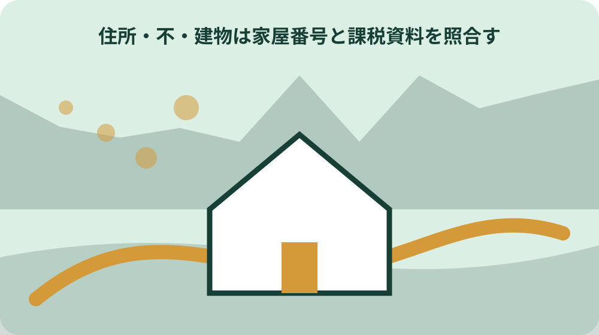
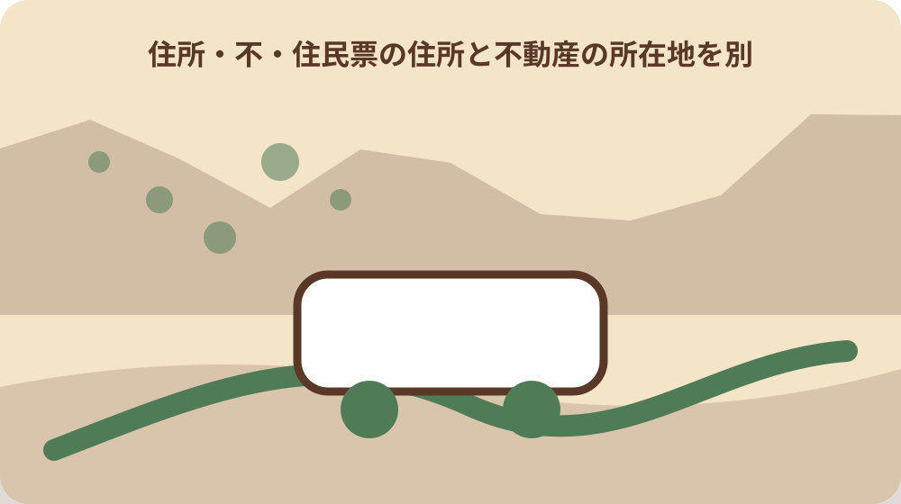

先に結論を確認する
この記事の答え：できません。不動産は所在・地番や家屋番号など別の識別情報で確認します。
森町で最初に照合する条件：住民票住所、郵送返送先、土地所在・地番、建物所在・家屋番号を別欄にする
住民票住所を生活上の住所として写す
住民票住所を生活上の住所として写すに関して、森町の住民票写しは、住民生活課窓口にある「住民票の写し等請求書」へ必要事項を記入して提出する。住民票住所を生活上の住所として写すを確認する際、住民票住所を生活上の住所として写すときは、公式資料の表記をそのまま控え、似た名称や数字を家族の記憶だけで同一と決めません。住民票住所を生活上の住所として写すの記録では、資料名と確認日も添えると、後日の更新と区別できます。
住民票住所を生活上の住所として写すを確認する際、森町の住民票写しの郵送請求は1通300円で、手数料として郵便局の定額小為替を同封する。住民票住所を生活上の住所として写すの記録では、この情報を住民票住所を生活上の住所として写す資料へ移す場合は、対象、日付、場所、名義など本文で確認できる項目だけを書きます。住民票住所を生活上の住所として写すを家族へ伝える前に、分からない欄は空白で消さず、確認先を付けた未確認欄として残します。
住民票住所を生活上の住所として写すの記録では、森町へ住民票住所を生活上の住所として写す内容を尋ねる前に、手元の資料で一致した点と一致しない点を二列にします。住民票住所を生活上の住所として写すを家族へ伝える前に、「森町の住民票写しは、住民生活課窓口にある「住民票の写し等請求書」へ必要事項を記入して提出する」という案内のどこを読んだかを示せば、今回の対象に合う回答を得やすくなります。
住民票住所を生活上の住所として写すを家族へ伝える前に、住民票住所を生活上の住所として写す結果には、回答日、担当窓口、参照資料、次に必要な行動を記録します。住民票住所を生活上の住所として写すの見直しでは、本人の意思や家族の予定は公的事実と別欄に置き、町の案内のように見える書き方を避けます。
同一世帯と同居を区別する
同一世帯と同居を区別するに関して、森町で住民票写しを請求できるのは本人または同一世帯の人で、住民登録上の世帯が別なら同居でも委任状が必要となる。同一世帯と同居を区別するを確認する際、同一世帯と同居を区別するときは、公式資料の表記をそのまま控え、似た名称や数字を家族の記憶だけで同一と決めません。同一世帯と同居を区別するの記録では、資料名と確認日も添えると、後日の更新と区別できます。
同一世帯と同居を区別するを確認する際、森町の郵送請求には、請求書、定額小為替、切手を貼った返信用封筒、本人確認書類の写しが必要となる。同一世帯と同居を区別するの記録では、この情報を同一世帯と同居を区別する資料へ移す場合は、対象、日付、場所、名義など本文で確認できる項目だけを書きます。同一世帯と同居を区別するを家族へ伝える前に、分からない欄は空白で消さず、確認先を付けた未確認欄として残します。
同一世帯と同居を区別するの記録では、森町へ同一世帯と同居を区別する内容を尋ねる前に、手元の資料で一致した点と一致しない点を二列にします。同一世帯と同居を区別するを家族へ伝える前に、「森町で住民票写しを請求できるのは本人または同一世帯の人で、住民登録上の世帯が別なら同居でも委任状が必要となる」という案内のどこを読んだかを示せば、今回の対象に合う回答を得やすくなります。
郵送返送先を現住所で確認する
郵送返送先を現住所で確認するに関して、別世帯の代理人が森町で住民票写しを請求する場合、委任者記入の委任状と代理人の本人確認書類が必要となる。郵送返送先を現住所で確認するを確認する際、郵送返送先を現住所で確認するときは、公式資料の表記をそのまま控え、似た名称や数字を家族の記憶だけで同一と決めません。郵送返送先を現住所で確認するの記録では、資料名と確認日も添えると、後日の更新と区別できます。
郵送返送先を現住所で確認するを確認する際、森町の固定資産税関係様式は、土地に関する届出、家屋に関する届出、未登記家屋の所有者異動を別項目で掲載している。郵送返送先を現住所で確認するの記録では、この情報を郵送返送先を現住所で確認する資料へ移す場合は、対象、日付、場所、名義など本文で確認できる項目だけを書きます。郵送返送先を現住所で確認するを家族へ伝える前に、分からない欄は空白で消さず、確認先を付けた未確認欄として残します。
郵送返送先を現住所で確認するの記録では、森町へ郵送返送先を現住所で確認する内容を尋ねる前に、手元の資料で一致した点と一致しない点を二列にします。郵送返送先を現住所で確認するを家族へ伝える前に、「別世帯の代理人が森町で住民票写しを請求する場合、委任者記入の委任状と代理人の本人確認書類が必要となる」という案内のどこを読んだかを示せば、今回の対象に合う回答を得やすくなります。

土地は所在と地番で分ける
土地は所在と地番で分けるに関して、森町の住民票請求時の本人確認は、運転免許証など写真付き書類1点、または所定の写真なし書類2点で行う。土地は所在と地番で分けるを確認する際、土地は所在と地番で分けるときは、公式資料の表記をそのまま控え、似た名称や数字を家族の記憶だけで同一と決めません。土地は所在と地番で分けるの記録では、資料名と確認日も添えると、後日の更新と区別できます。
土地は所在と地番で分けるを確認する際、森町の「現況（課税）地目変更届出書」は、土地の利用状況を変更した場合に用いる土地関係の様式である。土地は所在と地番で分けるの記録では、この情報を土地は所在と地番で分ける資料へ移す場合は、対象、日付、場所、名義など本文で確認できる項目だけを書きます。土地は所在と地番で分けるを家族へ伝える前に、分からない欄は空白で消さず、確認先を付けた未確認欄として残します。
土地は所在と地番で分けるの記録では、森町へ土地は所在と地番で分ける内容を尋ねる前に、手元の資料で一致した点と一致しない点を二列にします。土地は所在と地番で分けるを家族へ伝える前に、「森町の住民票請求時の本人確認は、運転免許証など写真付き書類1点、または所定の写真なし書類2点で行う」という案内のどこを読んだかを示せば、今回の対象に合う回答を得やすくなります。
建物は家屋番号と課税資料を照合する
建物は家屋番号と課税資料を照合するに関して、森町へ住民票写しを郵送請求した場合、証明書の返送先は請求書へ任意に書いた場所ではなく申請者の現住所となる。建物は家屋番号と課税資料を照合するを確認する際、建物は家屋番号と課税資料を照合するときは、公式資料の表記をそのまま控え、似た名称や数字を家族の記憶だけで同一と決めません。建物は家屋番号と課税資料を照合するの記録では、資料名と確認日も添えると、後日の更新と区別できます。
建物は家屋番号と課税資料を照合するを確認する際、森町の「家屋取り壊し届出書」は家屋を取り壊した場合の様式で、土地の地目変更届とは別に掲載されている。建物は家屋番号と課税資料を照合するの記録では、この情報を建物は家屋番号と課税資料を照合する資料へ移す場合は、対象、日付、場所、名義など本文で確認できる項目だけを書きます。建物は家屋番号と課税資料を照合するを家族へ伝える前に、分からない欄は空白で消さず、確認先を付けた未確認欄として残します。
建物は家屋番号と課税資料を照合するの記録では、森町へ建物は家屋番号と課税資料を照合する内容を尋ねる前に、手元の資料で一致した点と一致しない点を二列にします。建物は家屋番号と課税資料を照合するを家族へ伝える前に、「森町へ住民票写しを郵送請求した場合、証明書の返送先は請求書へ任意に書いた場所ではなく申請者の現住所となる」という案内のどこを読んだかを示せば、今回の対象に合う回答を得やすくなります。
未登記家屋を空欄のまま消さない
未登記家屋を空欄のまま消さないに関して、森町の住民票写しの郵送請求は1通300円で、手数料として郵便局の定額小為替を同封する。未登記家屋を空欄のまま消さないを確認する際、未登記家屋を空欄のまま消さないときは、公式資料の表記をそのまま控え、似た名称や数字を家族の記憶だけで同一と決めません。未登記家屋を空欄のまま消さないの記録では、資料名と確認日も添えると、後日の更新と区別できます。
未登記家屋を空欄のまま消さないを確認する際、森町の「未登記家屋所有者異動届出書」は未登記家屋の所有者変更に用い、不動産登記の名義変更とは別の町様式である。未登記家屋を空欄のまま消さないの記録では、この情報を未登記家屋を空欄のまま消さない資料へ移す場合は、対象、日付、場所、名義など本文で確認できる項目だけを書きます。未登記家屋を空欄のまま消さないを家族へ伝える前に、分からない欄は空白で消さず、確認先を付けた未確認欄として残します。
未登記家屋を空欄のまま消さないの記録では、森町へ未登記家屋を空欄のまま消さない内容を尋ねる前に、手元の資料で一致した点と一致しない点を二列にします。未登記家屋を空欄のまま消さないを家族へ伝える前に、「森町の住民票写しの郵送請求は1通300円で、手数料として郵便局の定額小為替を同封する」という案内のどこを読んだかを示せば、今回の対象に合う回答を得やすくなります。
本人確認書類の住所を照合する
本人確認書類の住所を照合するに関して、森町の郵送請求には、請求書、定額小為替、切手を貼った返信用封筒、本人確認書類の写しが必要となる。本人確認書類の住所を照合するを確認する際、本人確認書類の住所を照合するときは、公式資料の表記をそのまま控え、似た名称や数字を家族の記憶だけで同一と決めません。本人確認書類の住所を照合するの記録では、資料名と確認日も添えると、後日の更新と区別できます。
本人確認書類の住所を照合するを確認する際、法務省の不動産登記案内は土地・建物の登記を扱い、森町が交付する住民票写しや未登記家屋の町様式とは手続が異なる。本人確認書類の住所を照合するの記録では、この情報を本人確認書類の住所を照合する資料へ移す場合は、対象、日付、場所、名義など本文で確認できる項目だけを書きます。本人確認書類の住所を照合するを家族へ伝える前に、分からない欄は空白で消さず、確認先を付けた未確認欄として残します。
本人確認書類の住所を照合するの記録では、森町へ本人確認書類の住所を照合する内容を尋ねる前に、手元の資料で一致した点と一致しない点を二列にします。本人確認書類の住所を照合するを家族へ伝える前に、「森町の郵送請求には、請求書、定額小為替、切手を貼った返信用封筒、本人確認書類の写しが必要となる」という案内のどこを読んだかを示せば、今回の対象に合う回答を得やすくなります。
委任状の範囲を一件ずつ読む
委任状の範囲を一件ずつ読むに関して、森町の固定資産税関係様式は、土地に関する届出、家屋に関する届出、未登記家屋の所有者異動を別項目で掲載している。委任状の範囲を一件ずつ読むを確認する際、委任状の範囲を一件ずつ読むときは、公式資料の表記をそのまま控え、似た名称や数字を家族の記憶だけで同一と決めません。委任状の範囲を一件ずつ読むの記録では、資料名と確認日も添えると、後日の更新と区別できます。
委任状の範囲を一件ずつ読むを確認する際、森町の住民票写しは、住民生活課窓口にある「住民票の写し等請求書」へ必要事項を記入して提出する。委任状の範囲を一件ずつ読むの記録では、この情報を委任状の範囲を一件ずつ読む資料へ移す場合は、対象、日付、場所、名義など本文で確認できる項目だけを書きます。委任状の範囲を一件ずつ読むを家族へ伝える前に、分からない欄は空白で消さず、確認先を付けた未確認欄として残します。
委任状の範囲を一件ずつ読むの記録では、森町へ委任状の範囲を一件ずつ読む内容を尋ねる前に、手元の資料で一致した点と一致しない点を二列にします。委任状の範囲を一件ずつ読むを家族へ伝える前に、「森町の固定資産税関係様式は、土地に関する届出、家屋に関する届出、未登記家屋の所有者異動を別項目で掲載している」という案内のどこを読んだかを示せば、今回の対象に合う回答を得やすくなります。
固定資産通知書の宛名と物件欄を分ける
固定資産通知書の宛名と物件欄を分けるに関して、森町の「現況（課税）地目変更届出書」は、土地の利用状況を変更した場合に用いる土地関係の様式である。固定資産通知書の宛名と物件欄を分けるを確認する際、固定資産通知書の宛名と物件欄を分けるときは、公式資料の表記をそのまま控え、似た名称や数字を家族の記憶だけで同一と決めません。固定資産通知書の宛名と物件欄を分けるの記録では、資料名と確認日も添えると、後日の更新と区別できます。
固定資産通知書の宛名と物件欄を分けるを確認する際、森町で住民票写しを請求できるのは本人または同一世帯の人で、住民登録上の世帯が別なら同居でも委任状が必要となる。固定資産通知書の宛名と物件欄を分けるの記録では、この情報を固定資産通知書の宛名と物件欄を分ける資料へ移す場合は、対象、日付、場所、名義など本文で確認できる項目だけを書きます。固定資産通知書の宛名と物件欄を分けるを家族へ伝える前に、分からない欄は空白で消さず、確認先を付けた未確認欄として残します。
固定資産通知書の宛名と物件欄を分けるの記録では、森町へ固定資産通知書の宛名と物件欄を分ける内容を尋ねる前に、手元の資料で一致した点と一致しない点を二列にします。固定資産通知書の宛名と物件欄を分けるを家族へ伝える前に、「森町の「現況（課税）地目変更届出書」は、土地の利用状況を変更した場合に用いる土地関係の様式である」という案内のどこを読んだかを示せば、今回の対象に合う回答を得やすくなります。

住所変更後の旧表記を履歴に残す
住所変更後の旧表記を履歴に残すに関して、森町の「家屋取り壊し届出書」は家屋を取り壊した場合の様式で、土地の地目変更届とは別に掲載されている。住所変更後の旧表記を履歴に残すを確認する際、住所変更後の旧表記を履歴に残すときは、公式資料の表記をそのまま控え、似た名称や数字を家族の記憶だけで同一と決めません。住所変更後の旧表記を履歴に残すの記録では、資料名と確認日も添えると、後日の更新と区別できます。
住所変更後の旧表記を履歴に残すを確認する際、別世帯の代理人が森町で住民票写しを請求する場合、委任者記入の委任状と代理人の本人確認書類が必要となる。住所変更後の旧表記を履歴に残すの記録では、この情報を住所変更後の旧表記を履歴に残す資料へ移す場合は、対象、日付、場所、名義など本文で確認できる項目だけを書きます。住所変更後の旧表記を履歴に残すを家族へ伝える前に、分からない欄は空白で消さず、確認先を付けた未確認欄として残します。
住所変更後の旧表記を履歴に残すの記録では、森町へ住所変更後の旧表記を履歴に残す内容を尋ねる前に、手元の資料で一致した点と一致しない点を二列にします。住所変更後の旧表記を履歴に残すを家族へ伝える前に、「森町の「家屋取り壊し届出書」は家屋を取り壊した場合の様式で、土地の地目変更届とは別に掲載されている」という案内のどこを読んだかを示せば、今回の対象に合う回答を得やすくなります。
大石の視点：一住所一物件と思わない
大石の視点：一住所一物件と思わないに関して、森町の「未登記家屋所有者異動届出書」は未登記家屋の所有者変更に用い、不動産登記の名義変更とは別の町様式である。大石の視点：一住所一物件と思わないを確認する際、大石の視点：一住所一物件と思わないときは、公式資料の表記をそのまま控え、似た名称や数字を家族の記憶だけで同一と決めません。大石の視点：一住所一物件と思わないの記録では、資料名と確認日も添えると、後日の更新と区別できます。
大石の視点：一住所一物件と思わないを確認する際、森町の住民票請求時の本人確認は、運転免許証など写真付き書類1点、または所定の写真なし書類2点で行う。大石の視点：一住所一物件と思わないの記録では、この情報を大石の視点：一住所一物件と思わない資料へ移す場合は、対象、日付、場所、名義など本文で確認できる項目だけを書きます。大石の視点：一住所一物件と思わないを家族へ伝える前に、分からない欄は空白で消さず、確認先を付けた未確認欄として残します。
大石の視点：一住所一物件と思わないの記録では、森町へ大石の視点：一住所一物件と思わない内容を尋ねる前に、手元の資料で一致した点と一致しない点を二列にします。大石の視点：一住所一物件と思わないを家族へ伝える前に、「森町の「未登記家屋所有者異動届出書」は未登記家屋の所有者変更に用い、不動産登記の名義変更とは別の町様式である」という案内のどこを読んだかを示せば、今回の対象に合う回答を得やすくなります。
家族用住所表を更新する
家族用住所表を更新するに関して、法務省の不動産登記案内は土地・建物の登記を扱い、森町が交付する住民票写しや未登記家屋の町様式とは手続が異なる。家族用住所表を更新するを確認する際、家族用住所表を更新するときは、公式資料の表記をそのまま控え、似た名称や数字を家族の記憶だけで同一と決めません。家族用住所表を更新するの記録では、資料名と確認日も添えると、後日の更新と区別できます。
家族用住所表を更新するを確認する際、森町へ住民票写しを郵送請求した場合、証明書の返送先は請求書へ任意に書いた場所ではなく申請者の現住所となる。家族用住所表を更新するの記録では、この情報を家族用住所表を更新する資料へ移す場合は、対象、日付、場所、名義など本文で確認できる項目だけを書きます。家族用住所表を更新するを家族へ伝える前に、分からない欄は空白で消さず、確認先を付けた未確認欄として残します。
家族用住所表を更新するの記録では、森町へ家族用住所表を更新する内容を尋ねる前に、手元の資料で一致した点と一致しない点を二列にします。家族用住所表を更新するを家族へ伝える前に、「法務省の不動産登記案内は土地・建物の登記を扱い、森町が交付する住民票写しや未登記家屋の町様式とは手続が異なる」という案内のどこを読んだかを示せば、今回の対象に合う回答を得やすくなります。